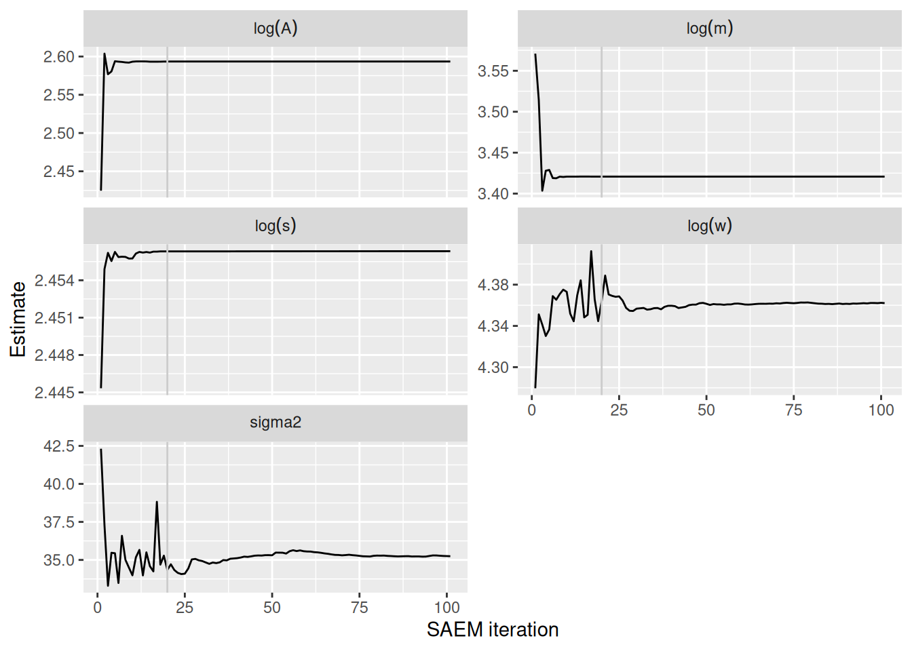
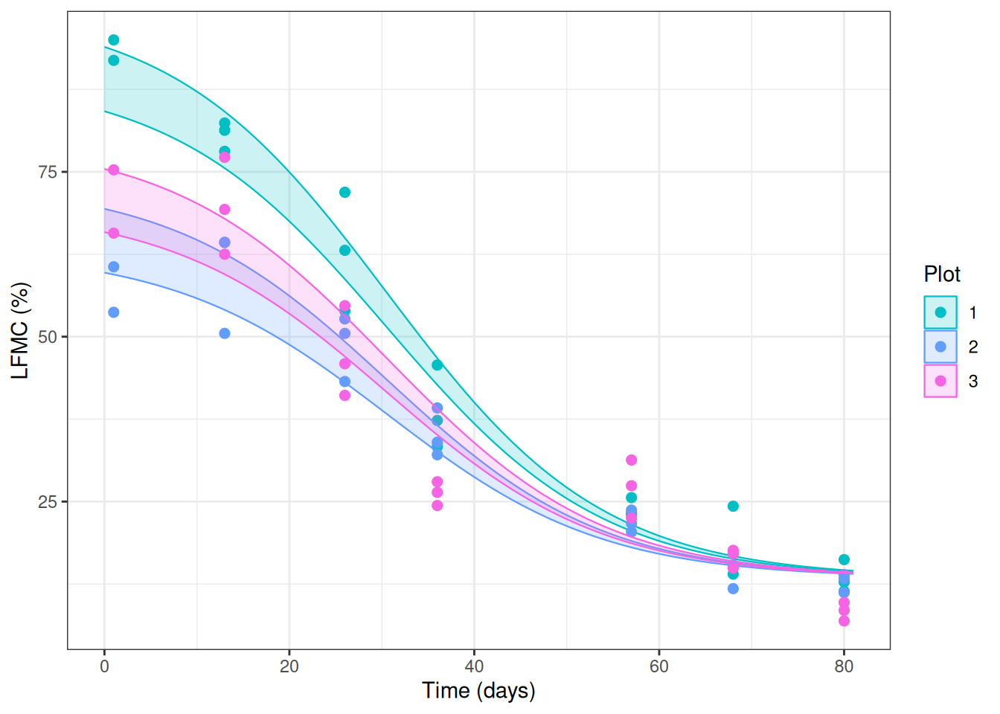

Code
library(ggplot2)
library(dplyr)
library(tidyr)
library(mvtnorm)
library(kableExtra)
# Figure theme
theme_set(theme_bw())
# Helper functions (four-parameter logistic, init, MCMC, SAEM-MCMC)
source("SAEM-MCMC.R")Leaf Fuel Moisture Content (LFMC) describes the amount of water in plants as a percentage of dry weight. This chapter illustrates the SAEM-MCMC algorithm (Stochastic Approximation EM with a Metropolis-within-Gibbs MCMC step) on LFMC temporal dynamics for perennial grasses measured on the Eastern site of the dataset (leaf.type == "Grass E").
For each plot \(i\), the LFMC is modelled with a declining four-parameter logistic curve:
\[ \text{LFMC}_{ij} = \frac{A_i - w_i}{1 + \exp\left(\frac{m_i - t_{ij}}{s_i}\right)} + w_i + \varepsilon_{ij}, \qquad \varepsilon_{ij} \sim \mathcal N(0,\sigma^2). \]
The individual parameters are log-transformed and gathered in \(\boldsymbol\varphi_i = (\log A_i, \log w_i, \log m_i, \log s_i)\), which are assumed to follow a Gaussian distribution with mean \(\boldsymbol\mu\) and covariance matrix \(\boldsymbol\Omega\). SAEM-MCMC is used to estimate \(\theta = (\boldsymbol\mu, \boldsymbol\Omega, \sigma^2)\).
This document relies on the helper functions in SAEM-MCMC.R (the four-parameter logistic, the initialisation, the MCMC sampler, and the SAEM-MCMC algorithm). Estimation results are cached: if the saved files res_SAEM_LFMC.Rdata and res_postSample_LFMC.Rdata are present they are loaded; otherwise the algorithms are run live (which takes longer).
library(ggplot2)
library(dplyr)
library(tidyr)
library(mvtnorm)
library(kableExtra)
# Figure theme
theme_set(theme_bw())
# Helper functions (four-parameter logistic, init, MCMC, SAEM-MCMC)
source("SAEM-MCMC.R")lfmc.data <- read.table("data_lfmc.txt", header = TRUE)
lfmc.data$plot <- as.factor(lfmc.data$plot)
lfmc.data$leaf.type <- with(lfmc.data,
factor(leaf.type,
levels = c("Grass W", "Grass E", "M. spinosum", "S. bracteolactus")))
levels(lfmc.data$leaf.type)[levels(lfmc.data$leaf.type) == "S. bracteolactus"] <-
"S. filaginoides"
# Reorder plots for consistent plotting
ord <- c("4", "5", "6", "1", "2", "3")
lfmc.data$plot_fact <- with(lfmc.data, factor(plot, levels = ord))
lfmc.data$plot <- as.numeric(as.character(lfmc.data$plot_fact))
nPlot <- 3
str(lfmc.data)'data.frame': 247 obs. of 6 variables:
$ leaf.type: Factor w/ 4 levels "Grass W","Grass E",..: 3 3 3 4 4 4 2 2 3 3 ...
$ time : int 1 1 1 1 1 1 1 1 1 1 ...
$ plot : num 1 1 1 1 1 1 1 1 2 2 ...
$ site : chr "E" "E" "E" "E" ...
$ lfmc : num 238 270 325 327 257 ...
$ plot_fact: Factor w/ 6 levels "4","5","6","1",..: 4 4 4 4 4 4 4 4 5 5 ...We focus on the perennial grasses of the Eastern site (Grass E), which involves 3 plots.
myData <- lfmc.data[lfmc.data$leaf.type == "Grass E", ]The observed LFMC dynamics for the three Eastern grasses plots:
cols <- setNames(scales::hue_pal()(6)[1:6], levels(myData$plot_fact))
ggplot(myData, aes(x = time, y = lfmc)) +
geom_point(aes(colour = plot_fact)) +
geom_smooth(colour = "gray", linewidth = 0.7, se = FALSE) +
scale_colour_manual(values = cols) +
labs(x = "Time (days)", y = "LFMC (%)", colour = "Plot")
We first build a rough guess \(\boldsymbol\varphi_i^{(0)}\) of the individual log-parameters for each plot, then derive the population parameters from these values.
For plot \(i\), initZ proceeds by optimisation on the “individual curve”:
# Optimisation-based per-individual initialisation
initZ <- function(myData) {
nPlot <- max(myData$plot)
Z.init <- matrix(0, nPlot, 4)
for (i in 1:nPlot) {
Data.i <- myData |> filter(plot == i)
tmin.i <- min(Data.i$time)
tmax.i <- max(Data.i$time)
A.i <- mean(Data.i$lfmc[Data.i$time == tmax.i]) # LFMC at last time
w.i <- mean(Data.i$lfmc[Data.i$time == tmin.i]) # LFMC at first time
# log((A-w)/(lfmc-w)-1) ~ m/s - time/s
U.i <- suppressWarnings(log((A.i - w.i)/(Data.i$lfmc - w.i) - 1))
r.i <- which(!is.finite(U.i) | is.na(U.i))
res_lm.i <- lm(U.i[-r.i] ~ Data.i$time[-r.i])
s.i <- -1/res_lm.i$coefficients[2]
m.i <- s.i * res_lm.i$coefficients[1]
if (m.i < 0) m.i <- mean(Data.i$time)
Z.init[i, ] <- log(c(A.i, w.i, m.i, s.i))
}
Z.init
}initTheta then sets \(\boldsymbol\mu\) as the mean and \(\boldsymbol\Omega\) as the (diagonal) variance of the initial \(Z^{(0)}\), and \(\sigma^2\) as the mean squared residual of the logistic fit.
initTheta <- function(Z.init, myData, omegaDiag = TRUE) {
mu.init <- colMeans(Z.init)
if (omegaDiag) {
K <- ncol(Z.init)
Omega.init <- matrix(0, K, K)
diag(Omega.init) <- apply(Z.init, 2, var)
} else {
Omega.init <- var(Z.init)
}
res.init <- myData$lfmc - FourParamLogis(myData$time, exp(Z.init[myData$plot, ]))
sigma2.init <- mean(res.init^2)
list(mu = mu.init, Omega = Omega.init, sigma2 = sigma2.init)
}Z.init <- initZ(myData)
theta.init <- initTheta(Z.init, myData)
tbl_Zinit <- data.frame(
Plot = 1:nPlot,
Z.init
)
colnames(tbl_Zinit)[-1] <- c("log(A)", "log(w)", "log(m)", "log(s)")
knitr::kable(tbl_Zinit,
digits = 3,
align = "c",
caption = "Initial individual log-parameters $\\\\varphi_i^{(0)}$ obtained by per-plot optimisation."
) |>
kableExtra::kable_styling(bootstrap_options = c("striped", "hover", "condensed"),
full_width = FALSE)| Plot | log(A) | log(w) | log(m) | log(s) |
|---|---|---|---|---|
| 1 | 2.600 | 4.537 | 3.490 | 2.430 |
| 2 | 2.549 | 4.046 | 3.630 | 2.433 |
| 3 | 2.124 | 4.256 | 3.592 | 2.472 |
The SAEM algorithm is run with 100 SAEM iterations, each involving a short MCMC exploration of the individual parameters (100 iterations), and the Metropolis proposal scale rho = c(1/100, 1/10, 1, 2). During the first 20 iterations the whole step size is used (stochastic behaviour), then it decreases as \(1/k^{0.99}\).
The SAEM step (SAEM_MCMC_NLME) embeds the Metropolis-within-Gibbs sampler (MCMC_NLME). Full commented implementation details of the two functions are given in SAEM-MCMC.R and discussed in Chapter 6 of the book.
paramsAlgo <- list(
nbIterMCMC = 100,
nbIterSAEM = 100,
rho = c(1/100, 1/10, 1, 2),
keep = FALSE,
print = FALSE
)
paramsAlgo$gammaSAEM <- c(rep(1, 20), 1/(1:paramsAlgo$nbIterSAEM)^0.99)res_SAEM <- file.exists("res_SAEM_LFMC.Rdata")
res_post <- file.exists("res_postSample_LFMC.Rdata")
if (res_SAEM) {
# Load saved, already-processed trace of the SAEM iterations
load("res_SAEM_LFMC.Rdata") # -> df_res_SAEM_MCMC
} else {
# Run the SAEM-MCMC algorithm live
res_SAEM_MCMC <- SAEM_MCMC_NLME(myData, paramsAlgo, omegaDiag = TRUE)
df_res_SAEM_MCMC <- as.data.frame(cbind(
res_SAEM_MCMC$mu, res_SAEM_MCMC$sigma2))
names(df_res_SAEM_MCMC) <- c("log(A)", "log(w)", "log(m)", "log(s)", "sigma2")
df_res_SAEM_MCMC$iterations <- 1:(paramsAlgo$nbIterSAEM + 1)
}We now plot the estimations of the population parametes obtained along the iterations.
df_trace <- pivot_longer(
df_res_SAEM_MCMC,
cols = c("log(A)", "log(w)", "log(m)", "log(s)", "sigma2"),
names_to = "parameter",
values_to = "value"
)
ggplot(df_trace, aes(x = iterations, y = value)) +
geom_line() +
geom_vline(xintercept = 20, colour = "grey80", linewidth = 0.5) +
facet_wrap(~ parameter, scales = "free_y", ncol = 2,
labeller = label_parsed) +
labs(x = "SAEM iteration", y = "Estimate")
The vertical line marks the end of the stochastic phase (k = 20). After that, the estimates converge smoothly toward the SAEM limit.
if (res_SAEM) {
# Recompute the final theta values that were used for posterior sampling
n <- paramsAlgo$nbIterSAEM + 1
mu <- c(
`log(A)` = df_res_SAEM_MCMC$`log(A)`[n],
`log(w)` = df_res_SAEM_MCMC$`log(w)`[n],
`log(m)` = df_res_SAEM_MCMC$`log(m)`[n],
`log(s)` = df_res_SAEM_MCMC$`log(s)`[n]
)
theta.estim <- list(mu = mu, sigma2 = df_res_SAEM_MCMC$sigma2[n])
} else {
n <- paramsAlgo$nbIterSAEM + 1
theta.estim <- list(
mu = res_SAEM_MCMC$mu[n, ],
sigma2 = res_SAEM_MCMC$sigma2[n],
Omega = res_SAEM_MCMC$Omega[n, , ]
)
}
tbl_estim <- data.frame(
Parameter = c("log(A)", "log(w)", "log(m)", "log(s)", "sigma^2"),
Estimate = unname(c(theta.estim$mu, theta.estim$sigma2))
)
knitr::kable(tbl_estim,
col.names = c("Parameter", "SAEM-MCMC estimate"),
digits = 3,
align = "lc",
caption = "SAEM-MCMC point estimates of the population parameters."
) |>
kableExtra::kable_styling(bootstrap_options = c("striped", "hover", "condensed"),
full_width = FALSE)| Parameter | SAEM-MCMC estimate |
|---|---|
| log(A) | 2.593 |
| log(w) | 4.362 |
| log(m) | 3.421 |
| log(s) | 2.456 |
| sigma^2 | 35.245 |
To assess the fit of the model, we sample the posterior distribution of the individual parameters given the estimated \(\widehat{\theta}\) with a longer MCMC run (5000 iterations, keeping the trace), then compute the predicted LFMC trajectories with their pointwise 95% credible intervals.
paramsAlgo2 <- paramsAlgo
paramsAlgo2$keep <- TRUE
paramsAlgo2$nbIterMCMC <- 5000
paramsAlgo2$print <- TRUEif (res_post) {
load("res_postSample_LFMC.Rdata") # -> post_Ind_param_MCMC
} else {
post_Ind_param_MCMC <- MCMC_NLME(res_SAEM_MCMC$Z, myData,
theta.estim, paramsAlgo2)
}
#dim(post_Ind_param_MCMC)seq_iter <- seq(paramsAlgo2$nbIterMCMC / 2, paramsAlgo2$nbIterMCMC, by = 2)
gg <- ggplot()
for (i in 1:nPlot) {
Data.i <- myData |> filter(plot == i)
seq_time <- seq(0, max(Data.i$time) + 1, length.out = 100)
Z.post.i <- post_Ind_param_MCMC[seq_iter, i, ]
F.i <- sapply(1:nrow(Z.post.i), function(m) {
FourParamLogis(seq_time, exp(Z.post.i[m, ]))
})
q.i <- apply(F.i, 1, quantile, probs = c(0.025, 0.975), na.rm = TRUE)
Data_simpost.i <- data.frame(time = seq_time)
Data_simpost.i$plot_fact <- factor(i, levels = ord)
Data_simpost.i$q05 <- q.i[1, ]
Data_simpost.i$q95 <- q.i[2, ]
gg <- gg +
geom_ribbon(data = Data_simpost.i,
aes(x = time, ymin = q05, ymax = q95,
fill = plot_fact, colour = plot_fact),
alpha = 0.20, linewidth = 0.4) +
geom_point(data = Data.i,
aes(x = time, y = lfmc, colour = plot_fact),
size = 2)
}
gg +
scale_colour_manual(values = cols) +
scale_fill_manual(values = cols) +
labs(x = "Time (days)", y = "LFMC (%)", colour = "Plot", fill = "Plot")
The shaded bands are the pointwise 95% credible intervals of the predicted LFMC trajectories for each plot, and the points are the observations. The model reproduces the declining LFMC dynamics of the three Eastern grasses plots well.